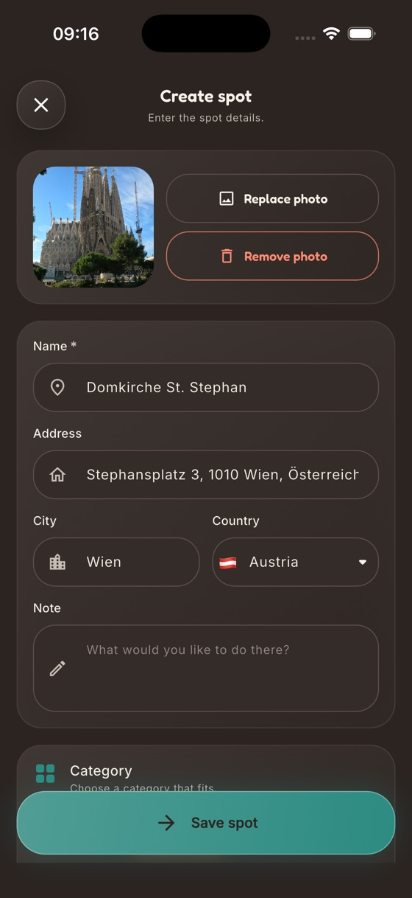
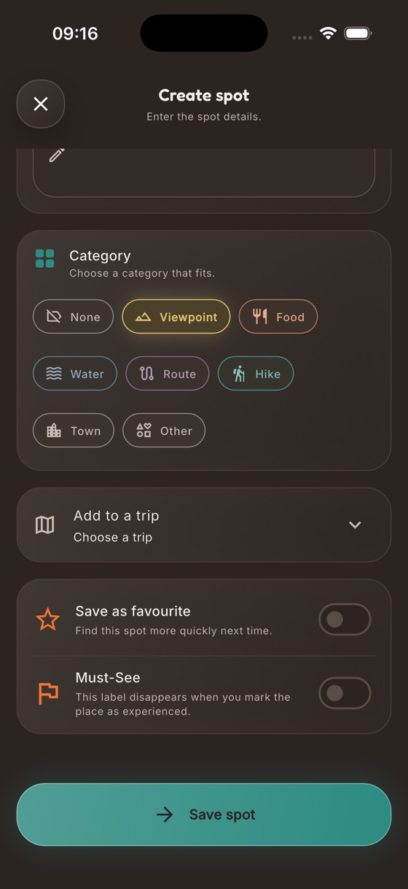
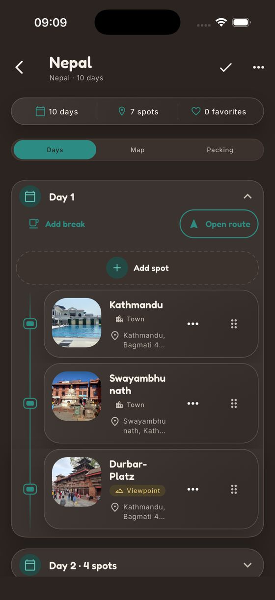
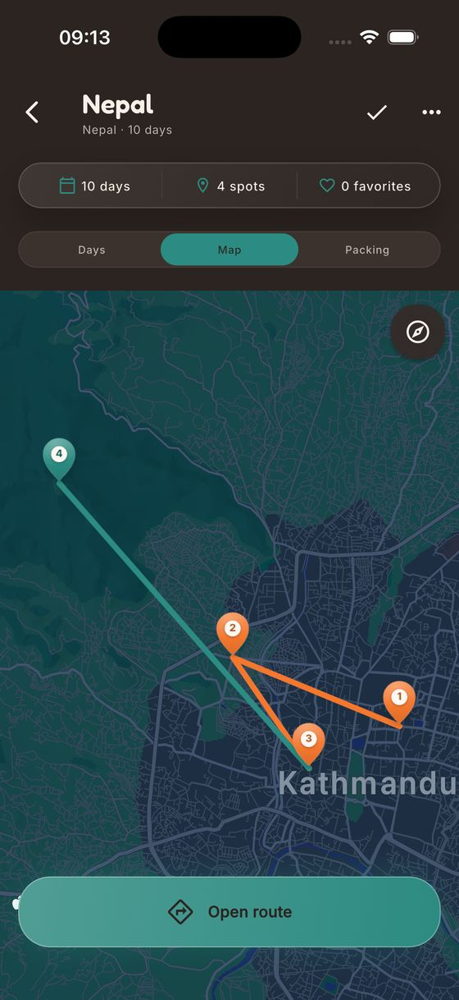

SpotJar legt den Ort an
SpotJar legt aus dem geteilten Link automatisch einen Ort an. Du kannst auch einen Link einfügen, nach einem Namen suchen oder den Ort von Hand anlegen.

Speichere Orte direkt aus Google Maps oder Apple Karten. In SpotJar ergänzt du Notizen und Kategorien, stellst Reisen zusammen und öffnest die fertige Route wieder in Maps.
So funktioniert esNutze Maps einfach so wie immer.
Vielleicht ist es ein Café, das dir jemand geschickt hat, ein Bergpass für den nächsten Sommer oder ein See für Sonntag.
Du musst Maps dafür nicht verlassen.
Du findest SpotJar im Teilen-Menü bei deinen anderen Apps.
Name, Adresse und Standort landen automatisch in SpotJar. Notizen und Kategorien kannst du später ergänzen.
SpotJar legt aus dem geteilten Link automatisch einen Ort an. Du kannst auch einen Link einfügen, nach einem Namen suchen oder den Ort von Hand anlegen.

Notiere, warum dir der Ort aufgefallen ist, und wähle eine Kategorie wie Aussicht, Essen oder Wanderung. Eine Reise musst du noch nicht planen.

Jeder Ort bekommt einen Pin. An der Farbe erkennst du, ob er noch offen, bereits erlebt, ein Muss oder ein Favorit ist. Die Karte zeigt dir auch, welche Länder du schon besucht hast.
Füge den Ort einer Reise hinzu, sammle weitere Ziele und verteile sie auf die Tage. Unterwegs markierst du jeden besuchten Ort als erlebt.

Mit einem Tipp öffnest du die ganze Reise als sortierte Route in Google Maps oder Apple Karten.
